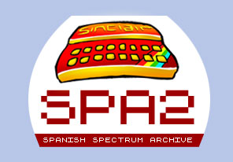

|
|
||
| Es otra página del portal | ||
| Programas
para el Spectrum Esta es la página principal inicial, desde abril del 2000 venimos recopilando programas que anteriormente no existían en internet, o bien mejorando las versiones existentes. Se trata que el esfuerzo de tantos programadores no se
pierda en
vano, Si quieres contribuir envíanos tus programas. |
Esta página se actualiza cuando se puede, si envias
material, se
actualizará antes.
Aquí podemos ver las actualizaciones de ésta y las anteriores semanas. Si quieres algo en concreto, no tienes mas que solicitarlo, si lo tenemos, lo ponemos; si no lo tenemos, lo buscamos; y si no lo encontramos... pues... pues... en algo teníamos que fallar. |
|
| |
||
| Estamos colaborando con Spanish Spectrum
Archive (SPA2), World of Spectrum y TZX Vault.  |
La página de la semana: |
|
| Los libros del Spectrum - Publicados en nuestro país, contiene una breve ficha de cada uno de ellos, con una imagen de su portada, algunas referencias y un breve comentario.
Las
ROMs de nuestro
país-
Las revistas y los fascículos del Spectrum - Las portadas de los primeros números de las revistas y coleccionables, son más de las que imaginas.
Las Fotos y los documentos - Destacan por ser inéditos y curiosos, un saco donde encontrarás de todo.
SpecDB- Es una aplicación de gestión de archivos de Spectrum, desarrollada por Juan Manuel de Castro. |
Las colecciones de programas- Programas interesantes clasificados por secciones. Las claves de los juegos- O como pasar a la segunda parte por la gorra y sin acabar la primera:
La Guia de Software de Microhobby-Las paginas escaneadas de esta guia de software publicada por Microhobby con detalle de los 100 mejores programas de aquella época:
La pistola optica Gun Stick- Todo sobre esta pistola: instrucciones, programas, etc:
Las fichas del Curso de Código Máquina - Toda la colección que acompañaba al libro del Curso de Código Máquina de Microhobby: Las utilidades - Tenemos algunas, no muchas, pero si interesantes, se trata de descubrir lo que podemos realizar con ellas:
|
Los manuales de los Spectrum- Aqui tienes todos los manuales de los diferentes modelos de Spectrum (o casi todos):
De la cinta al PC: Como hacerlo, guía rápida y fácil de consulta. Puedes pasar tus cintas al PC, donde puedes cargarlas con un emulador, con lo cual las conservarás por siempre y jamás: Las instrucciones de hardware y software- Si no sabes como se juega o cómo funciona, aquí tienes algunas intrucciones.
Las carátulas de las cintas - En especial las de los programas de aquí, tenemos muchas mas, pero la estamos enviando al SPA2:
Los catálogos del Spectrum - Catálogos de software para Spectrum editados por Investronica y otro de línea de moda, cosa de Amstrad.
La electrónica en el Spectrum - De la mano de varios de nuestros colaboradores: Droy, Jose Leandro, Julio Medina y Turriano podrás hacer tus montajes electrónicos para el Spectrum.
|